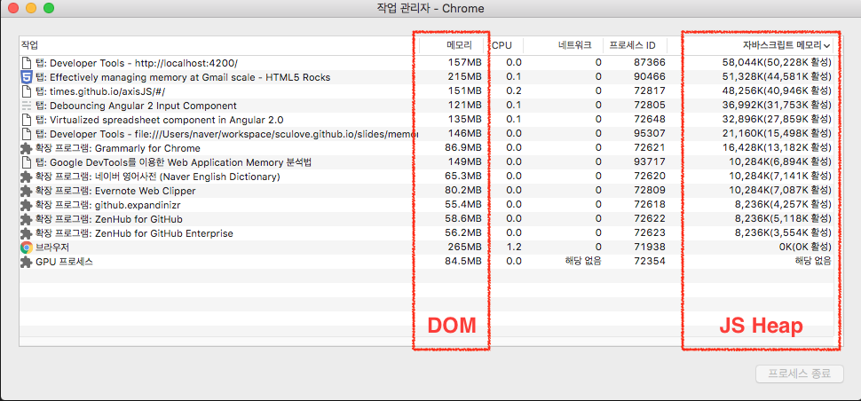
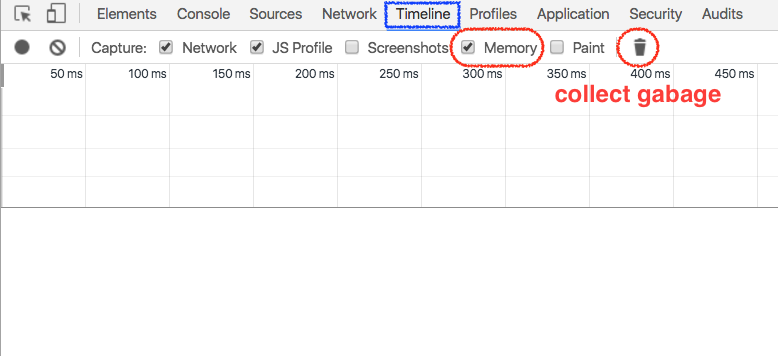
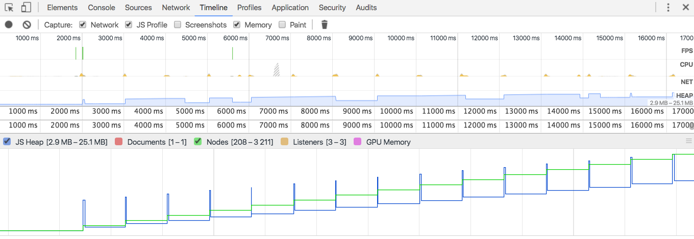
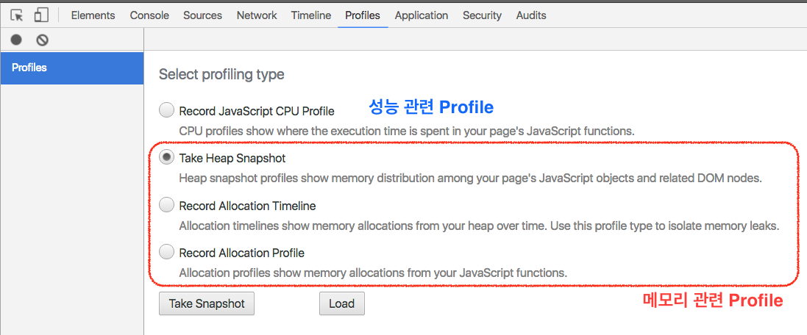
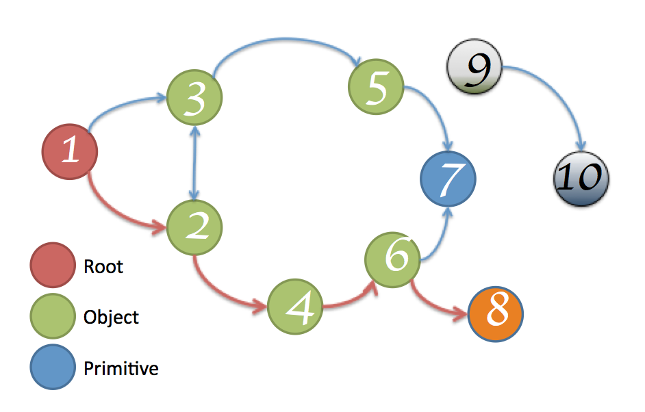

Google DevTools를 이용한
Web Application Memory 분석법
Memory Leak
a memory leak is a type of resource leak that occurs when a computer program incorrectly manages memory allocations in such a way that memory which is no longer needed is not released
Memory Leak 징후
- 페이지가 느리다.
- 페이지가 시간이 지날수록 점점 느려진다.
- 단말기 마다, 환경마다 증상의 차이가 크다.
- 페이지의 동작이 잠시 멈춘다.
- 브라우저가 죽는다(crashed)
왜 Memory leak은 발생하는가?
잘못 사용된 개발 패턴
전 별로 신경쓰지 않았는데...
잘 되던데요 ^^
네. 맞습니다
모던 브라우저는 Reloading시 메모리를 효과적으로 릴리즈합니다.
하지만, 당신이 개발하는 서비스가 SPA라면 상황은 달라집니다
SPA : Single-Page ApplicationMemory
Think of memory as a graph

Types
-
Primitive types : Number, Boolen, String다른 값의 reference를 갖을 수 없음
-
Object(key-value), Array(number key-value)다른 값의 reference를 가짐Memory leak 관리 대상

Object는 Object와 Array
GC (Garbage Collection)

Root와 연결이 끊어진 node의 메모리를 해제하는 작업
Memory Leak을 제거 하는 방법
사용한 Object, Array의 Reference가
Root와 연결되지 않도록 한다.
Memory Leak이 발생 할 수 있는
3가지 개발 패턴
1. Timers
var buggyObject = {
callAgain: function () {
var ref = this;
var val = setTimeout(function () {
console.log('Called again: '
+ new Date().toTimeString());
ref.callAgain();
}, 1000);
}
};
buggyObject.callAgain();
buggyObject = null; // buggyObject reference 제거
timer 내부에서 buggyObject reference가 여전히 존재함
var buggyObject = {
callAgain: function () {
function loopFunc() {
console.log('Called again: '
+ new Date().toTimeString());
setTimeout(loopFunc, 1000);
}
setTimeout(loopFunc, 1000);
}
};
buggyObject.callAgain();
buggyObject = null; // buggyObject reference 제거
timer 내부에서 buggyObject reference를 사용하지 않는다.
2. Closures
외부함수의 변수에 접근할 수 있는 내부 함수.
함수와 그 함수가 만들어진 환경으로 이루어진 객체
var a = function () {
var largeStr = new Array(1000000).join('x');
return function () {
return largeStr;
};
}();
반환된 closure는 largeStr 변수의 레퍼런스가 가지고 있음
하지만, 무분별한 Closure는 Memory leak을 유발합니다.
3. DOM leaks

DOM node는 DOM Tree에서 삭제되었지만, 여전히 DOM node의 reference가 존재하는 경우

var select = document.querySelector;
var treeRef = select("#tree");
var leafRef = select("#leaf");
var body = select("body");
body.removeChild(treeRef);
treeRef = null;
leafRef = null;
treeRef 때문에, GC가 발생하지 않음
leafRef 때문에, GC가 발생하지 않음
Event listeners
var Area = document.getElementById('area');
function addNote(index) {
var note = document.createElement('DIV');
note.id = 'note' + index;
note.innerHTML = '<div>노트 입니다.<button class="close"></div>';
Area.appendChild(note);
note.querySelector('button.close').addEventListener('click', onClickClose);
}
function removeNote(index) {
var note = document.getElementById(id);
Area.removeChild(note);
note.querySelector('button.close').removeEventListener('click', onClickClose);
}
addNote(0); removeNote(0);
addNote(1); removeNote(1);
이벤트를 dettach 하지 않기 때문에, GC가 발생하지 않음
var Area = document.getElementById('area');
function addNote(index) {
var note = document.createElement('DIV');
note.id = 'note' + index;
note.innerHTML = '<div>노트 입니다.<button class="close"></div>';
Area.appendChild(note);
}
function removeNote(index) {
Area.removeChild(document.getElementById(id));
}
function handler(e) {
if(e.target.nodeName === 'button'
&& e.target.classList.contains('close') ) {
onClickClose(e);
}
}
Area.addEventListener('click', handler);
addNote(0); removeNote(0);
addNote(1); removeNote(1);
Area.removeEventListener('click', handler);이벤트 delegate을 이용하여 개발
Chrome DevTools를 이용한
Memory Leak 분석하기
문제를 해결하는 방법
- 문제를 재연시키고, 확인하라
- 문제의 원인을 파악하라
- 문제를 해결하라.
- 목표점에 도달하기 까지 이를 반복하라.
문제를 재연시키고, 확인하라
- 현재 상태 확인
- 문제 원인 유추
- 목표 지표 확인
전체 메모리, CPU 사용량 보기
Task Manager (옵션 > 도구 더보기 > 작업관리자)
 JavaScript Memory(JS Heap)와 Memory (DOM)Timeline으로 확인하기 (1/3)
DevTools > Timeline tab, check `memory`
 확장 프로그램을 제외하기 위해, 시크릿 창으로 Chrome을 열어 확인한다Timeline으로 확인하기 (2/3)
- Record 시작
- GC 버튼을 일정 시간 간격으로 몇차례 눌러, 강제로 메모리를 릴리즈한다.
- Record를 중지한다
Timeline으로 확인하기 (3/3)
Memory Leak이 존재하면 계단형의 timeline을 보임
JS Heap이 계단형, Nodes가 계단형
JS Heap이 Memory Leak, Nodes가 Memory Leak
2. 문제의 원인을 파악하라
- 성능이 문제인가?
- Timeline을 통한 Bottleneck 확인
- CPU Profile을 통한 CPU 사용량 확인
- 메모리가 문제인가?
- Profile을 통한 Memory leak 확인
3. 문제를 해결하라
Profile 하기
 profile 측정 전에 GC를 자동 실행한다메모리 관련 툴
-
Take Heap Snapshot
JavaScript Object and related DOM nodes
kill -6 pid -
Record Allocation Timeline
시간 기준으로 할당과 해제를 반복하여, 남겨진 메모리를 확인
-
Record Allocation Profile
JavaScript 함수 기준으로 메모리량 확인
Take Heap Snapshot
Snapshot을 뜬 후, 비교를 통해 변경된 메모리 세부 내역을 확인한다
그 전에 알아야할 메모리 관련 용어 (1/2)
-
Shallow Size
array, string와 같이 직접적으로 메모리를 점유하고 있는 JavaScript 객체들의 크기
-
Retained Size
GC이후 남겨진 메모리의 크기. 즉, 메모리를 해제할수 없는 JS Heap의 크기
그 전에 알아야할 메모리 관련 용어 (2/2)
Distance: GC root로 부터의 Retaining Path
 8의 distance는 4메모리 툴의 view 타입
-
Summary view
constructor 이름으로 그룹지어 보여주는 뷰
-
Compare view
constructor 이름으로 그룹지어 표시하고, 2개의 Snapshot의 차이를 표시해주는 뷰
-
Containment view
JS Heap 메모리의 그래프를 표시
-
Statistics View
사용량을 그래프로 표시
Record Allocation Timeline
Record Allocation Profile
Reference
-
Effectively Managing Memory at Gmail scale
http://www.html5rocks.com/en/tutorials/memory/effectivemanagement/ -
Fix Memory Problems
https://developers.google.com/web/tools/chrome-devtools/profile/memory-problems/?hl=en -
Finding and debugging memory leaks in JavaScript with Chrome DevTools
http://slides.com/gruizdevilla/memory -
nhnent/fe.javascript wiki
https://github.com/nhnent/fe.javascript/wiki/August-22-August-26,-2016